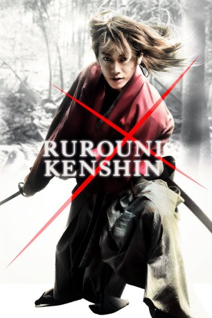

#1868 Rurouni Kenshin
 
 IMDB-Wertung: 7.6 / 10
IMDB-Wertung: 7.6 / 10  Metascore: 0
Metascore: 0 
Japan, 1878: Das Land öffnet sich nach jahrhundertelanger Isolation dem Westen. In diesen Zeiten des Aufruhrs zieht der einsame Samurai Kenshin durch das Land, geplagt von einem dunklen Geheimnis: Als gnadenloser Killer namens “Battosai” löschte er unzählige Leben aus. Jetzt greift der ausgezeichnete Schwertkämpfer nur noch zu seiner Waffe, um Unschuldige zu schützen. Seine Vergangenheit holt ihn wieder ein, als er erfährt, dass in Tokio ein unheimlicher Mörder unter seinem alten Decknamen reihenweise Menschen exekutiert! Auf seiner Suche nach dem wahren Täter stößt er auf alte Feinde und kommt einem Komplott auf die Spur, das ihn in tödliche Gefahr bringt…
Jahr: 2012
Dauer: 134 Minuten
FSK: 16
Land: Japan Studio: Splendid FilmTonspuren:
Untertitel: Deutsch,
Auflösung: 1080p (1920x808) Größe: 6021 MB
Genre: Action, Drama, Geschichte
Regisseur: Keishi Ohtomo
Drehbuch: Nobuhiro Watsuki, Kiyomi Fujii, Keishi Ohtomo
Soundtrack: Naoki Satô
Darsteller:
 Yû Aoi als Megumi Takani
Yû Aoi als Megumi Takani- Emi Takei als Kaoru Kamiya
 Teruyuki Kagawa als Kanryuu Takeda
Teruyuki Kagawa als Kanryuu Takeda- Takeru Satô als Kenshin Himura
 Yôsuke Eguchi als Saito Hajime
Yôsuke Eguchi als Saito Hajime- Munetaka Aoki als Sanosuke Sagara
- Taketo Tanaka als Yahiko Myojin
- Kôji Kikkawa als Jine Udo
Datei: X:\HD-Eastern-Collections\Rurouni Kenshin\Rurouni Kenshin (2012, FSK16, 1920x808).mkv seit 28.08.2015
Festplatte: HD Eastern+Western
 Alle Filme aus Gruppe 'HD-Eastern-Collections\Rurouni Kenshin'
Alle Filme aus Gruppe 'HD-Eastern-Collections\Rurouni Kenshin'